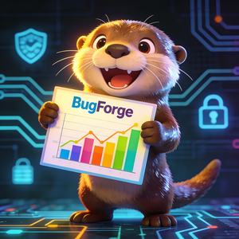
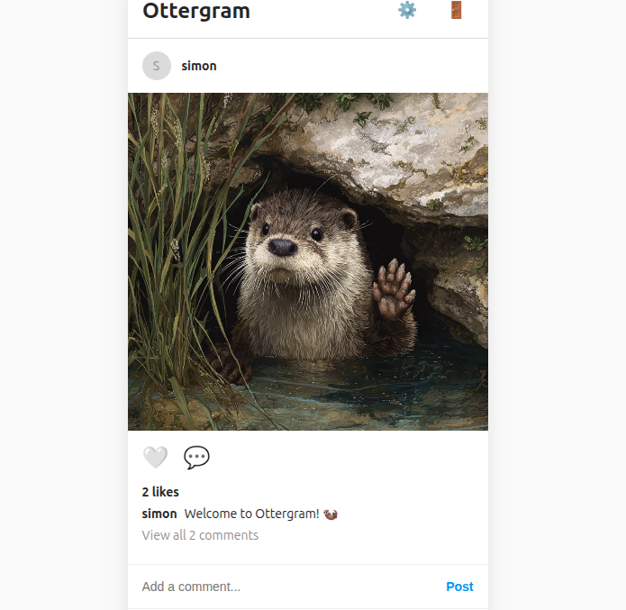
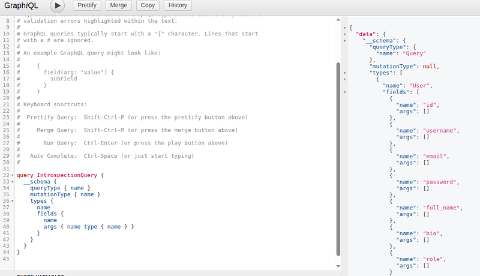
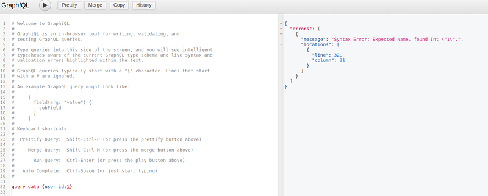
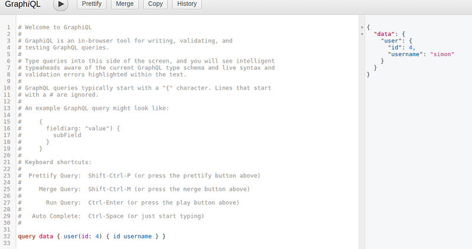
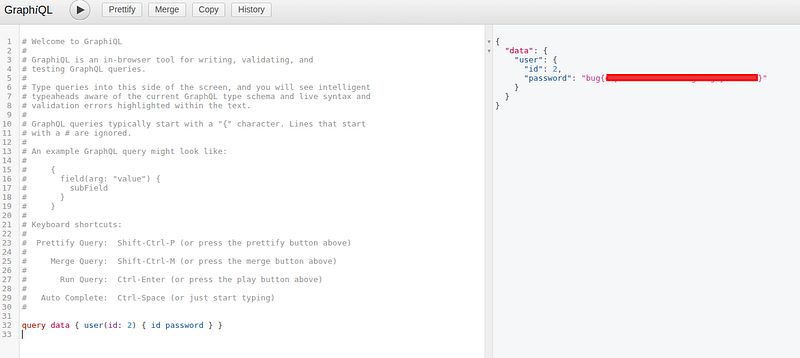

OSCP · OSWP · PWPP · PWPA · PAPA · EnCE · Linux+ · LPIC-1 · Network+ · Security+ · Pentest+ · eJPT · eWPT · BSc · PGCert
Ottergram Writeup

This was a really nice lab. I usually save my thoughts for the end, but I really liked this one. Why? It wasn’t one you see everyday and it was a quick but effective lesson in how not to set up GraphQL.
Step 1: Browse the app

I’ll save you the register screenshots and get straight to it. I saw a /graphQL endpoint in my proxy history and so I figured that’s likely what this what this vulnerability was going to be.
Step 2: Heading straight to /graphql
The cool thing with this kind of vulnerability is you really don’t need any specialist tools aside from your browser. There’s a real “old-skool” feel to this.
I had an manual payload i’d used in a previous CTF and so I used it here and it showed me pretty much everything I needed to know to get going. Over on the right hand side, I could see the fields and there was all kinds of interesting account information that may be available to me.

Step 3: Fixing Up Syntax
As you can see, I got an error (and several more after this) relating to what GraphQL was expecting to see. In this case, it was expecting a name. Well, I knew the names from ottergram’s main page, so I could try that.

I eventually got the queries working and could pull back my own username.

Step 4: Getting admin’s password
Next, for the admin password. admin was id: 2.

and the challenge was completed!